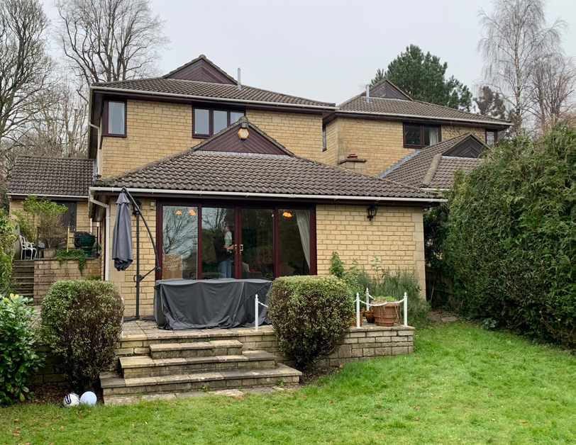
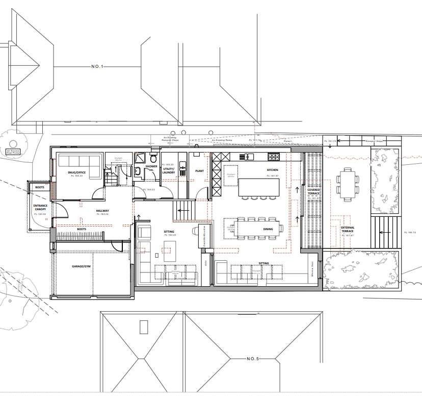
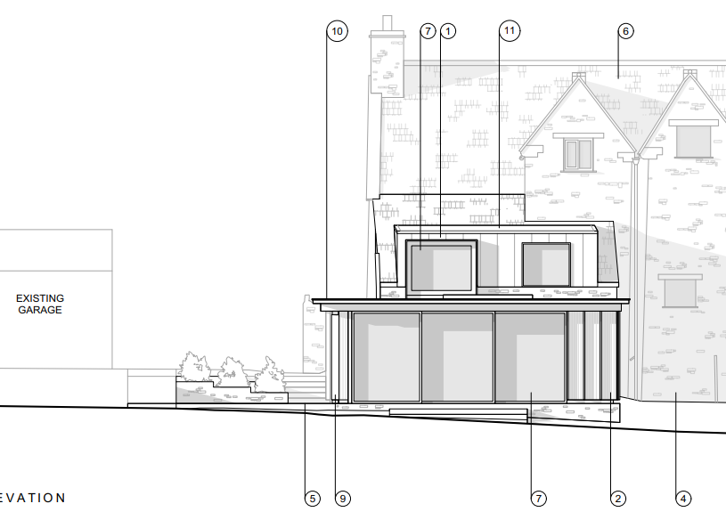
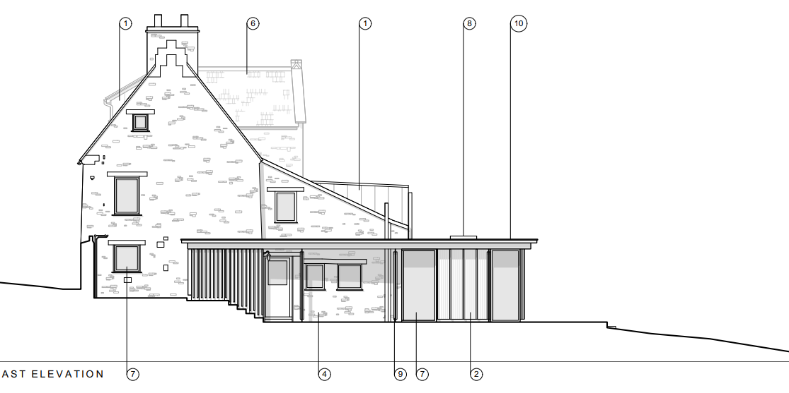
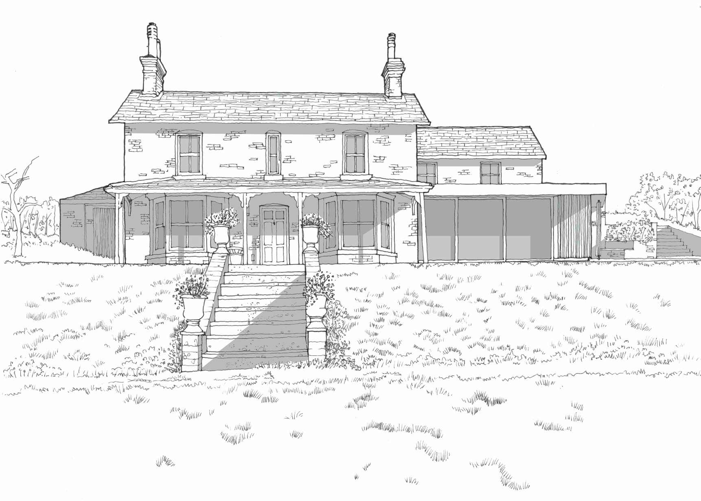

All Projects

Residential Works
Extension and Refurbishment of Dwelling
I contributed to concept and options development in form, layout and materiality, and preparing full drawing packages for planning applications. A key focus was creating seamless connections with the surrounding landscape and Bath's historic urban fabric, which gave me insight into design development and planning procedures.
3 Hamilton Road — Refurbishment including over-cladding and insulation, redevelopment of the first floor and garden extension and enhanced landscaping.
9 Dower Cottage — Improvement works including an open-plan kitchen and dining extension opening onto the garden, replacement of a deteriorated dormer window to improve the first-floor bedroom.




